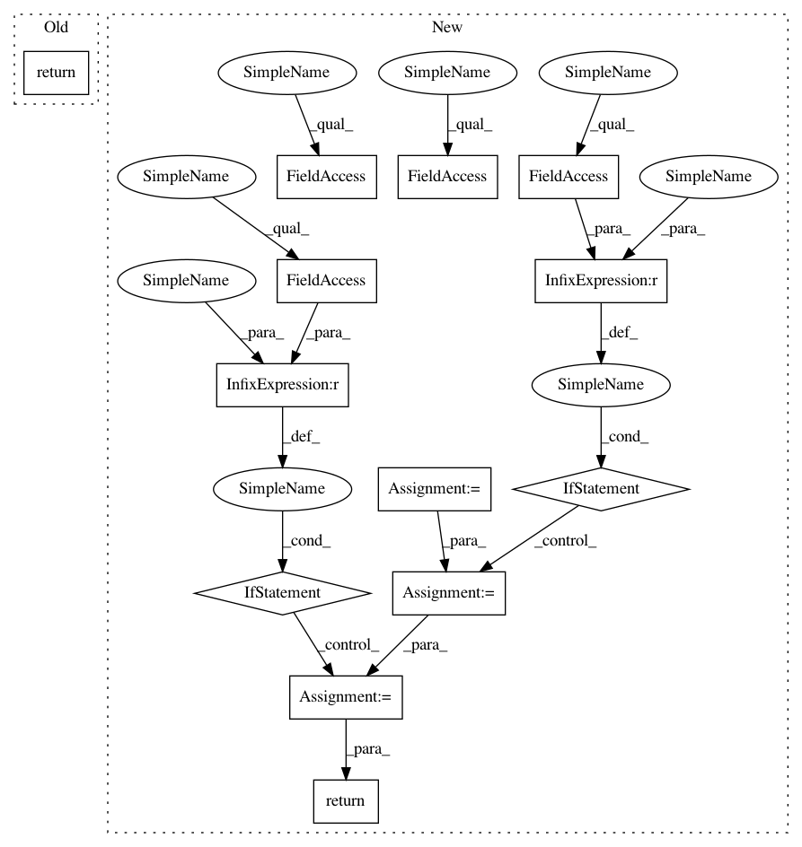

6e1bb36b78a4b9bd9052879e657cb399a2c6ecbd,q_output.py,ContinuousQOutput,greedy_actions,#ContinuousQOutput#,119
Before Change
@cached_property
def greedy_actions(self):
return self.mu
@cached_property
def max(self):
return F.reshape(self.v, (self.batch_size,))
After Change
@cached_property
def greedy_actions(self):
a = self.mu
if self.min_action is not None:
a = F.maximum(
self.xp.broadcast_to(self.min_action, a.data.shape), a)
if self.max_action is not None:
a = F.minimum(
self.xp.broadcast_to(self.max_action, a.data.shape), a)
return a
@cached_property
def max(self):
if self.min_action is None and self.max_action is None:
In pattern: SUPERPATTERN
Frequency: 4
Non-data size: 13
Instances
Project Name: chainer/chainerrl
Commit Name: 6e1bb36b78a4b9bd9052879e657cb399a2c6ecbd
Time: 2016-08-25
Author: muupan@gmail.com
File Name: q_output.py
Class Name: ContinuousQOutput
Method Name: greedy_actions
Project Name: chainer/chainerrl
Commit Name: 6e1bb36b78a4b9bd9052879e657cb399a2c6ecbd
Time: 2016-08-25
Author: muupan@gmail.com
File Name: q_output.py
Class Name: ContinuousQOutput
Method Name: greedy_actions
Project Name: hls-fpga-machine-learning/hls4ml
Commit Name: be63c1a4942b0c1bac627ec4cec65e448b0c78db
Time: 2020-05-12
Author: sioni.summers10@imperial.ac.uk
File Name: hls4ml/model/hls_layers.py
Class Name: FixedPrecisionType
Method Name: __str__
Project Name: hls-fpga-machine-learning/hls4ml
Commit Name: be63c1a4942b0c1bac627ec4cec65e448b0c78db
Time: 2020-05-12
Author: sioni.summers10@imperial.ac.uk
File Name: hls4ml/model/hls_layers.py
Class Name: IntegerPrecisionType
Method Name: __str__
Project Name: rusty1s/pytorch_geometric
Commit Name: 4511a4ef8da6432f137f2ebdbb2ab78a617215f3
Time: 2020-06-08
Author: matthias.fey@tu-dortmund.de
File Name: torch_geometric/nn/conv/nn_conv.py
Class Name: NNConv
Method Name: forward